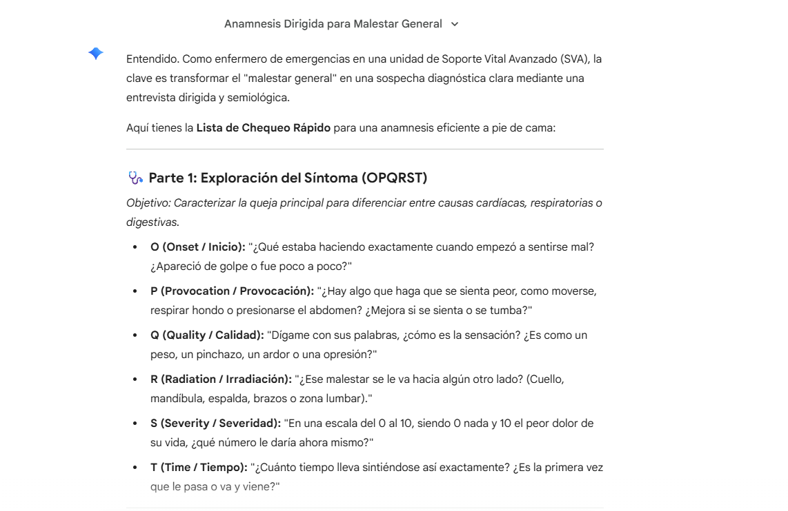
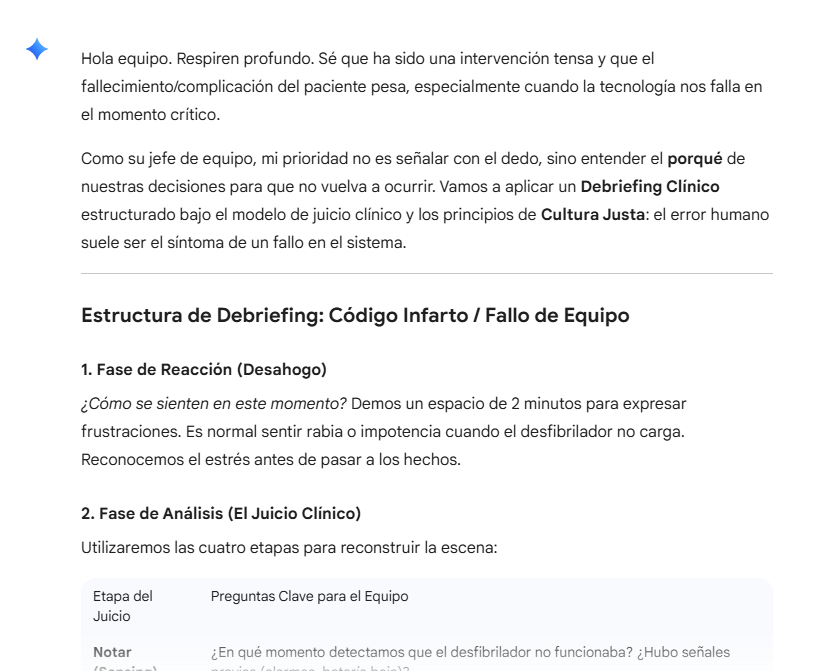
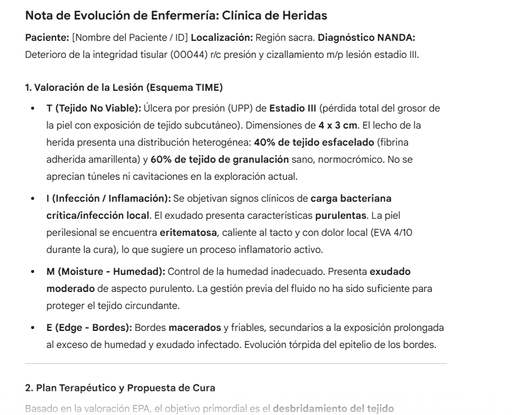

Anamnesis Dirigida en Emergencias Prehospitalarias
"Actúa como Enfermero de Emergencias Prehospitalarias (Soporte Vital Avanzado).
Contexto: Hemos llegado al domicilio de un paciente consciente que ha llamado por 'malestar general' inespecífico. El entorno es seguro y la valoración inicial (triángulo de evaluación) es estable, pero necesito profundizar rápidamente para decidir el traslado o el tratamiento in situ.
Tarea: Genera un guion de Anamnesis Dirigida estructurado y eficiente.
Utiliza la mnemotecnia OPQRST para investigar el síntoma principal (Inicio, Provocación, Calidad, Irradiación, Severidad, Tiempo).
Utiliza la mnemotecnia SAMPLE para los antecedentes (Síntomas, Alergias, Medicación, Pasado médico, Última ingesta, Eventos previos).
Añade 3 preguntas de seguridad ('Red Flags') para descartar gravedad oculta (ej. dolor torácico silente, síncope previo, disnea).
Formato: Preséntalo como una 'Lista de Chequeo Rápido' con las preguntas literales que debo hacerle al paciente para obtener esa información de forma clara y directa."
Se emplea Gemini, versión gratuita.

Accede al resto de la conversación, haciendo clic aquí.
Checklist de Revisión Post-Incidente (Debriefing)
"Actúa como jefe de equipo de emergencias. Acabamos de atender un código infarto complicado con fallo en el desfibrilador. Crea una estructura de 'Debriefing Clínico' (basada en el modelo de juicio clínico) para analizar con el equipo qué salió mal, qué salió bien y qué aprender, sin buscar culpables (Cultura Justa)."
Se usa Gemini, versión gratuita.

Accede a la conversación, aquí.
Informe Valoración de Heridas (Esquema TIME)
"Actúa como Enfermera de Práctica Avanzada en Heridas (EPA). Redacta un registro de evolución clínica formal para la historia del paciente describiendo una úlcera por presión en la zona sacra. Datos de la herida: Estadio III, dimensiones 4x3 cm, lecho con 40% de tejido esfacelado y 60% de granulación, exudado moderado purulento y bordes macerados. Piel perilesional eritematosa. Tarea: Redacta la nota clínica utilizando terminología técnica precisa y el esquema TIME (Tejido, Infección/Inflamación, Humedad, Bordes). Propón el producto de cura ideal basándote en la gestión del exudado."
Ejemplo respuesta, realizado con Gemini en versión gratuita.

Accede a la conversación completa haciendo clic aquí.